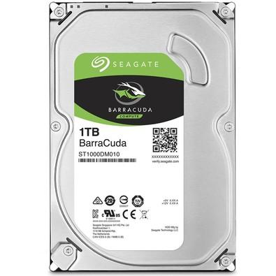

Disco rígido popularmente chamado também de HD (derivação de HDD do inglês hard disk drive), "memória de massa" ou ainda de "memória secundária" é a parte do computador onde são armazenados os dados.[1] O disco rígido é uma memória não-volátil, ou seja, as informações não são perdidas quando o computador é desligado, sendo considerado o principal meio de armazenamento de dados em massa.[2] Por ser uma memória não-volátil, é um sistema necessário para se ter um meio de executar novamente programas e carregar arquivos contendo os dados inseridos anteriormente quando ligamos o computador. Nos sistemas operativos mais recentes, ele é também utilizado para expandir a memória RAM, através da gestão de memória virtual. Existem vários tipos de interfaces para discos rígidos diferentes: IDE/ATA, Serial ATA, SCSI, Fibre channel, SAS.. 